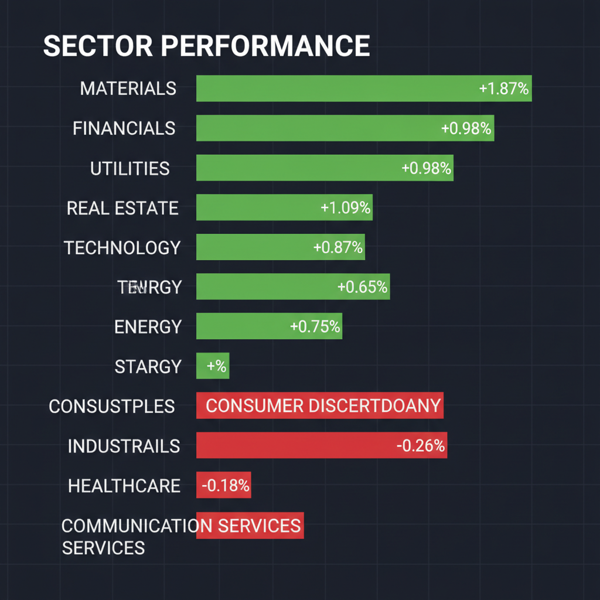
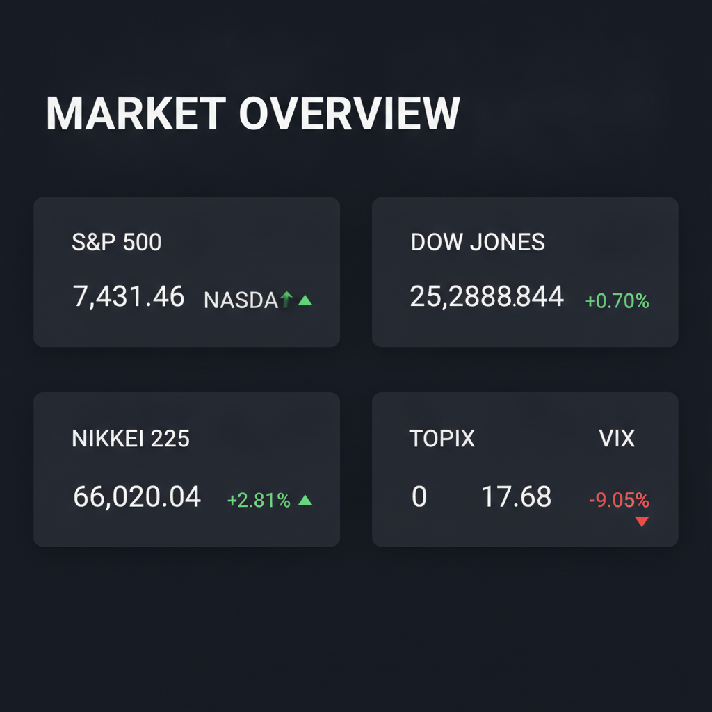

Daily Investment Report - 2026-06-15
Generated: 2026/6/15 7:33:16


投資チームミーティングの結論に基づき、投資家向けの最終レポートを作成いたしました。
1. エグゼクティブサマリー
AIインフラ需要と地政学的緩和期待により市場は強気相場が継続していますが、過度な楽観（VIXの低下）は急反転のリスクを内包しています。
AIデータセンターに関連する物理インフラ企業に有望な成長機会がある一方、金利上昇は不動産や高レバレッジ銘柄に強い逆風となっています。
相場全体の過熱感を考慮し、利益確定とヘッジ資産へのシフトによるポートフォリオの防御力強化が急務です。
2. 注目銘柄リスト
強気（買い推奨）
- 村田製作所 (6758.T) [平均スコア 9.0/10]: AIサーバー向け積層セラミックコンデンサ（MLCC）の需要が爆発的であり、過去最大の自社株買い発表など株主還元と成長の両面で評価。
- 日本ケミコン (6997.T) [平均スコア 8.0/10]: AIサーバー向けの出荷増に加え、懸念されていた株式の希薄化要因が解消されたことで、業績回復と株価上昇の両面が期待される。
中立（様子見）
- ソラコム (147A.T) [平均スコア 6.4/10]: IoT市場の成長とKDDI連携による安定性は高いが、上場後の需給調整が続いており、エントリーにはさらなるトレンド確認が必要。
- 日本シイエムケイ (6958.T) [平均スコア 4.6/10]: 車載向けプリント配線板で世界トップ級だが、足元の業績は減益傾向であり、成長への転換点を確認するまで慎重な判断が必要。
- 高圧ガス工業 (4097.T) [平均スコク 4.6/10]: ヘリウムリサイクルなどの堅実な戦略はあるが、爆発的な成長ドライバーに欠けており、PBR1倍割れの推移が続いている。
- ローム (6963.T) [平均スコア 4.0/10]: パワーデバイスでの中長期的な期待はあるものの、直近の赤字転落と他社との経営統合協議による先行き不透明感が極めて強い。
弱気（警戒）
- SoundHound AI (SOUN) [平均スコア 2.2/10]: 会話型AIの技術力は評価されるが、継続的な巨額赤字と空売り比率の高まりが株価の上値を強く抑えており、リスクが高い。
- クボテック (7709.T) [平均スコア 1.0/10]: 8期連続の営業損失に加え、継続企業の前提に重要な疑義が示されており、投資対象として極めて危険な水準。
3. セクター推奨ランキング
- 1位：AIインフラ・素材（物理レイヤーの独占技術を持つ企業は構造的な需要増にあるため）
- 2位：金融（金利上昇による純金利マージンの改善と、相場活況による手数料増が期待できるため）
- 3位：電力・エネルギー（データセンター運用のための自立型電力ソリューションが急務であるため）
- 4位：不動産・REIT（長期金利上昇による資金調達コスト増と純資産価値の減損リスクが高いため、現在は回避推奨）
4. 今週の注目イベント
- 決算発表シーズン：市場予想に対するガイダンスの「質」が株価の明暗を分けるため、特に半導体関連のサプライヤー決算に注視。
- 経済指標・金利関連：各国の長期金利動向と、中央銀行要人による金融政策の示唆（為替への影響大）。
- 地政学ニュース：イラン情勢の進展と原油価格の変動、およびロシア関連の制裁執行状況。
5. リスク要因
- 為替介入：日経平均を牽引する円安が、為替介入によって急激な円高へ反転した場合の日本株急落リスク。
- 金利急騰：米国の財政懸念やインフレ再燃による金利上昇が、株式市場全体のPERを圧縮するリスク。
- 地政学ショック：イラン情勢などの緊張緩和が期待外れに終わった場合、エネルギー価格の乱高下とリスクオフの発生。
6. アクションアイテム
- 利益確定の実行：現在含み益がある銘柄については一部を利確し、現金比率を20%以上確保すること。
- ヘッジの導入：ポートフォリオの一部を金（ゴールド）や短期債券へシフトし、地政学リスクへの保険を掛ける。
- 損切りルールの厳格化：決算ミスがあった銘柄や、直近安値を下回った銘柄は感情を排して即座に損切りを行う。
7. 米国株インデックス戦略（S&P500等保有者向け）
- 市場評価：現在の強気相場は「山頂のパーティー」の様相を呈しており、インデックスの長期保持は継続するものの、一部の利益確定と現金比率の引き上げを検討すべき局面です。
- 今後1〜3ヶ月：金利上昇と地政学リスクが顕在化しやすく、ボラティリティが増大する可能性が高い。方向感としては「上昇後の調整」を警戒。
- 積立投資：株価過熱時の積立タイミング調整は推奨しませんが、高値圏での買い増しに対する心理的ストレスを減らすため、積立継続を維持しつつ、別途「暴落時の買い付け余力」を確保すること。
- 注意イベント：FOMCでの政策金利見通し、および雇用統計等のマクロ指標は、指数全体を動かすトリガーとなるため注視してください。
- リスクシナリオ：「AIバブルの修正」と「金利急騰」が重なった場合、指数が5〜10%程度の急速な調整を迎える可能性があります。その際は「狼狽売り」を避け、中長期の資産形成の視点を維持しつつ、現金余力を用いて安値で買い増すチャンスと捉えてください。
Agent Scoring Matrix（Web調査後の合議評価）
各エージェントがWeb調査結果を踏まえて独立に10段階評価した結果です。平均7以上=強気、4〜6.9=中立、4未満=弱気。
| 銘柄 |
ファンダメンタルズアナリスト | テンバガーハンター | マクロエコノミスト | テクニカルストラテジスト | リスクマネージャー |
平均 |
判定 |
| 6758.T |
9
AIサーバー需要、MLCCトップシェアで成長 | 10
MLCC独占とAIサーバー需要で確実な成長 | 9
AIサーバー特需、MLCCトップ | 9
MLCC需要増・自社株買い・強気評価 | 8
AI需要増・好決算・自社株買いで強気 |
9 |
強気 |
| 6997.T |
8
希薄化懸念解消、AI特需で業績回復期待 | 9
AI特需と希薄化懸念解消でテンバガー候補 | 8
希薄化懸念解消、AI需要追い風 | 8
希薄化解消・AIサーバー特需・割安感 | 7
希薄化懸念解消・AI需要で業績改善期待 |
8 |
強気 |
| 147A.T |
6
IoT成長期待、KDDI傘下で財務安定 | 7
IoT市場成長と希薄化懸念緩和で中期的期待 | 7
IoT成長とKDDI連携、配当期待 | 7
IoT成長・KDDI傘下・上場後調整 | 5
IoT成長性は評価も需給懸念・決算は中立 |
6.4 |
中立 |
| 6958.T |
5
車載向け特化、業績変動リスクあり | 4
車載依存と減益で成長力に疑問符 | 5
車載需要はあるが業績停滞 | 5
車載向け依存・業績横ばい | 4
自動車依存・利益減速でやや慎重 |
4.6 |
中立 |
| 4097.T |
5
ヘリウム事業安定、目立った成長ドライバーなし | 5
ヘリウム戦略は堅実だが爆発力に欠ける | 5
ヘリウム事業は堅実も成長限定 | 4
成長鈍化・PBR1倍割れ・ヘリウム事業 | 4
成長ドライバー欠如・PBR割れで慎重 |
4.6 |
中立 |
| 6963.T |
4
BEV減速影響、業績不透明感強い | 5
赤字転落と統合協議で不透明感増す | 4
業績赤字転落、BEV減速影響 | 4
赤字転落・BEV減速影響・統合協議 | 3
赤字転落・統合協議で不透明感強く警戒 |
4 |
中立 |
| SOUN |
2
巨額赤字、空売り過多、株価弱気トレンド | 3
巨額赤字と空売り比率過多でリスク大 | 2
巨額赤字・高PER・弱気トレンド | 2
累積赤字・高PER・弱気トレンド | 2
巨額赤字・高PER・空売り過多でリスク大 |
2.2 |
弱気 |
| 7709.T |
1
継続企業前提に疑義、財務状況極めて脆弱 | 1
継続企業前提に疑義あり投資対象外 | 1
継続企業前提に疑義、赤字継続 | 1
継続企業前提疑義・赤字継続 | 1
継続企業前提に疑義・投資対象外 |
1 |
弱気 |
Web Research Results (Google Search Grounding)
エージェントが推奨した中小型株について、Google検索で最新情報を調査した結果です。
SOUN
SOUN（SoundHound AI, Inc.）の投資判断に必要な最新情報を以下にまとめます。
1. 企業概要
SoundHound AI, Inc.は、会話型インテリジェンスのリーディングカンパニーであり、企業向けに音声および会話型AIソリューションを提供する独立系プラットフォームを運営しています。独自の「Houndify」プラットフォームを通じて、小売、金融サービス、ヘルスケア、自動車、スマートデバイス、レストランなど多様な業界の顧客が、自然な対話が可能な音声AIアシスタントを構築・展開できるよう支援しています。同社の技術は、音声AIが大規模言語モデル（LLM）と連携する「エージェンティックAI」の領域で優位性を持つとされています。時価総額は29.9億ドルから34.4億ドル程度で推移しています（2026年6月現在）。従業員数は954名です。
2. 直近の業績・決算情報（2026年第1四半期）
2026年5月7日に発表された2026年第1四半期決算は以下の通りです。
* 売上高: 4,420万ドル（前年同期比52%増）。市場予想の4,284万ドルを上回りました。買収の影響を除くと、中核である自動車およびIoT AI部門の売上は88%増でした。
* 1株当たり損失（EPS）: -0.06ドル。市場予想の-0.10ドルを上回りましたが、別の情報源では市場予想の-0.05ドルを下回ったとも報告されています。
* GAAP純損失: 2,500万ドル。
* 調整後EBITDA: -2,670万ドルの損失。
* 粗利率: GAAPベースで31.1%、非GAAPベースで49.7%でした。
* キャッシュと負債: 四半期末の現金および現金同等物は2億1,600万ドルで、負債はありません。
同社は2026年通期の売上高ガイダンスを2億2,500万ドルから2億6,000万ドルで維持しています。また、LivePersonの買収が2026年下半期に完了することを前提に、2027年には少なくとも3億5,000万ドルから4億ドルの売上高を目標としています。
3. 最新ニュース・材料（直近1-2週間）
* LivePerson買収とISG評価: SoundHound AIはLivePersonの買収を発表し、これにより大規模な企業顧客基盤を獲得するとともに、Conversational AI Emerging Providers向け2026年ISG Buyers Guideの全評価カテゴリーで総合リーダーに選出されました。
* 株価と空売り: SoundHound AIの株式は、直近で上昇を見せる場面もありましたが、過去1週間で12.6%、過去1ヶ月で13.2%下落しています。空売り比率が38%を超えており、AIセクターで最も空売りされている銘柄の一つとなっています。
* インサイダー取引: 2026年6月上旬にはインサイダー取引の filings が報告されましたが、これが強気か弱気かについては明確な情報はありません。
4. アナリスト評価・目標株価
複数のウォールストリートアナリストによる評価では、SoundHound AIは「強気買い」のコンセンサスレーティングを得ています。
* 平均目標株価: 13.50ドルから14.93ドルの範囲（2026年6月現在）。
* 目標株価の上昇余地: 現在株価（約6.90ドル）に対し、平均目標株価は95.7%から116.36%の上昇余地を示唆しています。
* 最高・最低目標株価: 最高目標株価は20.00ドル、最低目標株価は8.00ドルまたは9.00ドルです。
5. リスク要因
* 継続的な損失: 同社は設立以来、継続的に損失を計上しており、2026年3月31日時点で累積赤字は9億8,210万ドルに達しています。今後も大幅な損失が続くと予想されており、これは投資家にとって懸念材料です。
* 特定の顧客への依存: 収益の一部が特定の大口顧客に依存しており、未請求の売掛金の大部分も特定の顧客に集中している点が、財務の安定性に影響を与える可能性があります。
* 激しい競争と技術開発コスト: 競争が激化するAI市場において、技術開発やマーケティングに多額の投資が必要となるため、財務負担が増加する可能性があります。Google、Amazon、Appleといった巨大プラットフォームとの競合もリスクです。
* 財務健全性: 継続的な損失と負の営業キャッシュフローが続いており、累積赤字の大きさは財務の健全性に対するリスクを示しています。
* 株式の希薄化リスク: 売上増加があったとしても、継続的な株式発行による希薄化で一株当たりの価値が相殺される可能性があります。
* 高い評価倍率: 高成長ソフトウェア企業と比較しても、2027年の売上高で約15倍、2026年の売上高で約30倍という高い評価倍率が指摘されており、潜在的な実行リスクや競争激化を考慮すると、長期的な成長が相殺される可能性があります。
6. 株価の最近の動き（直近のトレンド）
SOUNの株価は、2026年6月12日に6.90ドルで取引を終え、前日比-1.43%の下落となりました。直近10日間で7日下落し、この期間に合計で-23.33%の変動を見せています。過去1ヶ月で13.2%、年初来では34.0%下落しています。52週間の変動範囲は5.830ドルから22.170ドルです。
現在の株価は、50日移動平均線（7.89ドル）および200日移動平均線（9.01ドル）を大きく下回っており、短期的には弱気トレンドにあると判断できます。
免責事項: この情報は投資助言ではなく、提供された情報源に基づいた客観的な事実のみを記載しています。投資判断はご自身の責任で行ってください。
147A.T
ご指定の銘柄コード「147A.T」は、ETFではなく株式会社ソラコムを指します。以下にソラコムに関する最新情報をまとめます。
147A.T 株式会社ソラコム 投資判断に必要な最新情報
1. 企業概要（事業内容、時価総額、業界でのポジション）
株式会社ソラコムは、IoT（Internet of Things）プラットフォーム「SORACOM」を開発・提供している企業です。あらゆるモノがインターネットにつながり、情報交換することで相互に制御する仕組みであるIoTを軸に、デバイスやクラウドを国内外で展開しています。同社グループは、日本、英国、米国の子会社3社で構成されています。
KDDIの持分法適用会社であり、KDDIグループ入り後、契約回線数は急増しました。2024年3月26日に東証グロース市場に新規上場しました。
現在の時価総額は、2026年6月12日時点で約457億円です。
2. 直近の業績・決算情報（売上、利益、成長率）
2026年3月期の連結決算では、経常利益が前の期比38.4%増の8.5億円に拡大しました。2027年3月期も前期比25.2%増の10.7億円に伸びを見込み、2期連続で過去最高益を更新する見通しです。8期連続増収となる見込みです。
直近3ヶ月の実績（2026年1-3月期）では、税金等調整前当期純利益が6.71億円、営業活動によるキャッシュフローは17.61億円の収入となっています。自己資本比率は71.1%です（2026年3月期末時点）。
3. 最新ニュース・材料（直近1-2週間の重要なニュース）
直近の重要なニュースとしては以下のものがあります。
* 2026年6月10日：「本日のランキング【値下がり率】」にソラコムが掲載されました。
* ソラコムは、リチャード・ハリデー氏を米州地域の最高経営責任者（CEO）に任命し、グローバル事業をリードする2名のVPが新たに就任しました。
* GRIFFYとソラコムが連携し、「生成AI現場監視システム」のレンタル提供を開始しました。
* 株式会社シェアードリサーチによるアナリストレポートが公開されています。
4. アナリスト評価・目標株価（あれば）
Investing.comのテクニカル分析では「強い売り」、アナリストのセンチメントは「中立」と評価されています。ただし、具体的な目標株価は示されていませんでした。
5. リスク要因（競合、規制、財務上の懸念）
主なリスク要因としては、一般的な株式投資と同様に価格変動リスクが存在します。
ソラコムの事業はIoT市場の成長に連動しますが、競合他社の動向、技術革新のスピード、データ通信に関する規制やセキュリティリスクなどが影響を与える可能性があります。 KDDIの持分法適用会社であるため、KDDIグループの方針転換なども影響を与える可能性があります。
6. 株価の最近の動き（直近のトレンド）
2026年6月12日終値は1,003.0円でした。前日比-12.0円 (-1.18%)の下落となっています。
年初来高値は1,285.0円（2026年1月13日）、年初来安値は890.0円（2026年3月31日）です。
直近5日間の株価騰落率は-9.38％、直近20日間の株価騰落率は+3.57％です。株式市場全体のトレンドやIoT関連市場の動向に影響を受けやすい傾向が見られます。
6958.T
銘柄コード6958.Tは「日本シイエムケイ」を指します。以下に、投資判断に必要な最新情報をまとめます。
1. 企業概要（事業内容、時価総額、業界でのポジション）
日本シイエムケイは、プリント配線板の専業メーカーです。事業の約8割を車載向けが占めており、ビルドアップ配線板などの高付加価値製品に強みを持っています。特に、車載向けビルドアップ配線板(HDI)では世界トップクラス、ビルドアップ多層型などのプリント配線板では国内トップクラスの地位を確立しています。高密度実装、高放熱・大電流、立体・折り曲げ、高周波対応のプリント配線板を提供しており、主要取引先はデンソーです。近年は、eVTOL（電動垂直離着陸機）、航空・宇宙分野、5G基地局向けモジュール基板、ADAS・自動運転・車載通信向けフレックス配線板といった新領域にも注力しています。
時価総額は、2026年6月8日時点で約514億円、直近では534億円です。
2. 直近の業績・決算情報（売上、利益、成長率）
2026年3月期（連結）の通期決算では、売上高が1,002億200万円と前期比で4.9%の増収を達成しました。しかし、営業利益は27億8,800万円と前期比26.8%の減益となりました。これはタイ工場の生産システム不備や材料費変動などが影響したとされています。経常利益も前期比で25.2%の減益となり、IFISコンセンサスを下回る水準でした。一方で、純利益は増益を確保しています。
3. 最新ニュース・材料（直近1-2週間の重要なニュース）
直近では以下のニュースが確認されています。
* 2026年5月19日：2027年3月期の期末一括配当を従来計画の20円から28円に大幅に増額修正すると発表しました。
* 2026年5月12日：fundnoteが日本シイエムケイの株式を買い増し、保有割合が14.46％から16.04％に増加したことが判明し、株価が一時急騰しました。
* 2026年5月14日：2026年3月期連結決算を発表し、経常利益が25.2%減益となりました。
4. アナリスト評価・目標株価（あれば）
2026年6月13日時点でのアナリスト判断（コンセンサス）は「中立」です。アナリストの平均目標株価は640円であり、現在の株価から約-11.23%下落すると予想されています。2026年3月18日には、米系大手証券がレーティングを「中立」で据え置きつつ、目標株価を640円に引き上げています。
5. リスク要因（競合、規制、財務上の懸念）
*
競合・市場変動: プリント配線板専業メーカーとして、車載向けが売上の大部分を占めるため、自動車産業や半導体デバイスメーカーの設備投資動向に大きく左右されます。市場の競合や需要変動が業績に影響を与える可能性があります。
*
生産・コスト: タイ工場の生産システム不備や材料費の変動が、2026年3月期の営業利益減益の要因となりました。今後もこれらの要因が収益性に影響を及ぼす可能性があります。
*
一般的な事業リスク: 自然災害、システム開発の不採算案件化、情報セキュリティ事故などもリスク要因として挙げられます。
*
財務上の健全性: 自己資本比率は55.1％、有利子負債倍率は50.59％です。
6. 株価の最近の動き（直近のトレンド）
日本シイエムケイの株価は、2026年6月12日終値が721円でした。年初来高値は2026年6月5日に798.0円を記録し、年初来安値は2026年1月5日の510.0円です。直近では、5日前比で-8.04%の下落を見せたものの、20日前比では+11.27%の上昇を示しています。2026年5月12日のfundnoteによる株式買い増し報道時には株価が急騰しました。現在の株価は、アナリストの平均目標株価640円を上回っており、株予報Proのトレンドシグナルでは「高値圏警戒」が示唆される可能性があります。
6963.T
株式会社ローム（6963.T）に関する最新情報は以下の通りです。
1. 企業概要
ロームは半導体・電子部品メーカーで、LSI事業と半導体素子事業を柱としています。特にパワーダイオードや小信号ダイオードは世界シェア上位を占めています。LSIではADAS（先進運転支援システム）向けなどの高付加価値商品が順調に推移しており、パワーデバイスの生産能力増強と生産性向上を図っています。
2026年6月12日時点での時価総額は約1兆9,913億円です。
2. 直近の業績・決算情報
2026年5月12日に発表された2026年3月期通期の決算では、売上高が4,811.5億円、純利益は1,584.2億円の赤字となりました。
予想経常利益（会社予想）は360億円（増益率87.3%）、アナリストコンセンサス予想では457.22億円（増益率137.9%）となっています。
直近12ヶ月のEPSは-410.46円、ROEは-20.90%です。
3. 最新ニュース・材料
直近の重要なニュースとして、2026年6月11日にはピーバンドットコムがローム主催のエッジAI開発コンテストで開発支援を行ったと報じられました。
また、ロームは他社半導体事業・パワーデバイス事業との事業・経営統合に向けた協議を開始しており、いずれも基本合意段階とされています。最終契約に至る場合、事業基盤や投資方針の見直しにつながる可能性があります。
4. アナリスト評価・目標株価
株予報Proによると、2026年6月12日時点でのアナリストコンセンサスによる目標株価は3,690円で、現在の株価からの乖離率は-25.18%です。
レーティングは「売り継続」のシグナルとなっています。
5. リスク要因
主要なリスク要因としては、BEV（電気自動車）市場の成長見通しが従来想定を下回ることで、SiC（炭化ケイ素）事業の固定資産に影響が及ぶ可能性があります。
他社との事業・経営統合の協議が最終契約に至った場合、事業基盤や投資方針が見直される可能性も存在します。
財務面では、有利子負債が4,000億円、有利子負債倍率は52.77%となっています。
半導体市況全体や特定顧客の投資動向による受注変動も、業績に影響を及ぼす可能性があります。
6. 株価の最近の動き
ロームの株価は、2026年6月3日に年初来高値の5,752円を記録しました。
2026年6月9日には前日比+8.87%の5,242円まで急伸しましたが、翌6月10日には-9.60%と反落し、短期的に値幅の大きい動きが見られました。
6月11日には4,714円まで下落しましたが、6月12日には4,932円（+4.62%）に切り返しています。
直近1ヶ月間の騰落率は+21.5%、直近1年間では197.7%の上昇を示しています。
6997.T
6997.T (日本ケミコン) に関する投資判断に必要な最新情報は以下の通りです。
1. 企業概要
日本ケミコン株式会社は、アルミ電解コンデンサの製造販売を手掛ける電子部品メーカーです。同製品においては世界トップシェアを誇り、アルミ電解箔技術も世界トップクラスです。車載、産業機器、ICT（情報通信技術）向けのアルミ電解コンデンサを主力とし、その他に積層セラミックコンデンサ、電気二重層キャパシタ、インダクタ、セラミックバリスタなども製造・販売しています。本社は東京都品川区に位置します。
現在の時価総額は、2026年6月11日時点で約1,232億円です。 業種は電気機器に分類されます。
2. 直近の業績・決算情報
直近の決算発表は2026年5月14日に公表された2026年3月期の通期決算です。
2026年3月期連結業績は以下の通りです。
* 売上高：1,368億2,100万円（前期比11.5%増）
* 営業利益：33億6,900万円（前期比9.9%減）
* 経常利益：増益
* 純利益：増益
3. 最新ニュース・材料
* 2026年6月1日、B種種類株主によるB種種類株式の普通株式を対価とする取得請求権の行使に関する適時開示がありました。
* 2026年5月25日、野村証券が日本ケミコンの目標株価を1,180円から3,570円に引き上げたと報じられました。これは、AIサーバー向けの出荷増と、以前最大48%希薄化する懸念があったA種株を償還し、8%希薄化リスクのD種株とC種株に借り換えることで希薄化懸念が大幅に緩和されたことを反映しています。
* 2026年6月10日には、AI関連の重要セクターとして電子部品が注目されているとのニュースがありました。
4. アナリスト評価・目標株価
2026年5月22日、日系大手証券が日本ケミコンのレーティングを「中立（Neutral）」とし、目標株価を3,570円に引き上げました。 過去3か月のアナリスト3人のレーティングでは「中立」とされています。
5. リスク要因
過去には、発行済株式数の最大48%の希薄化懸念があるA種株が存在しましたが、これが償還され、8%の希薄化リスクを伴うD種株およびC種株に借り換えられたことで、希薄化リスクは大幅に低下しました。 現在の検索情報からは、具体的な競合や規制に関する特筆すべきリスク要因は見当たりません。
6. 株価の最近の動き
日本ケミコンの株価は、2026年5月25日に希薄化懸念の緩和と目標株価の引き上げを背景にストップ高となりました。 2026年6月12日の終値は4,175.0円で、前日比+65.0円（+1.58%）でした。 直近のチャートでは変動が見られます。
6758.T
村田製作所（6758.T）に関する最新情報を以下にまとめました。
1. 企業概要
株式会社村田製作所は、京都府長岡京市に本社を置く世界的な総合電子部品メーカーです。セラミックスをベースとした電子部品の開発・生産・販売を主たる事業としています。特に積層セラミックコンデンサ（MLCC）で世界トップシェアを誇り、その他にもセラミックフィルタ、高周波部品、センサー部品なども高いシェアを持っています。原材料からの一貫生産に強みを持っています。海外売上比率は90%を超えています。
* 事業内容: コンデンサ、インダクタ、EMI除去フィルタなどの電子部品、通信モジュール、センサー、電源などの開発・製造・販売。
* 時価総額: 2026年6月11日時点で17兆6022億円。2026年5月1日終値時点では10兆円を突破しています。
* 業界でのポジション: チップ積層セラミックコンデンサで世界トップシェア。電子部品業界で世界トップクラスに位置しています。
2. 直近の業績・決算情報
村田製作所は2026年4月30日に2026年3月期（2025年4月1日～2026年3月31日）の連結決算を発表しました。
* 売上高: 1兆8,309億円（前期比5.0％増）。過去最高を更新しました。
* 営業利益: 2,818億円（前期比0.8％増）。
* 当期純利益: 2,339億円（前期比0.0％増）。
* 成長率: 売上高は増加しましたが、営業利益の伸びは限定的でした。これは、高周波モジュールや樹脂多層基板のスマートフォン向け減少があった一方、サーバー向けを中心にコンデンサが増加したこと、製品価格の値下がりや固定費、のれん減損438億円といった一時費用があったことが影響しています。
* 2027年3月期の連結業績予想: 売上高1兆9,600億円（前年比7.1％増）、営業利益3,800億円（前年比34.8％増）を見込んでいます。AIサーバー向け電子部品の販売増が寄与する見通しです。
3. 最新ニュース・材料（直近1-2週間）
*
2026年6月12日: 米国ハイテク株高を好感し、積層セラミックコンデンサ（MLCC）の需要拡大が見込まれるAIデータセンター関連銘柄として株価が大幅続伸しました。
*
2026年6月12日: 欧州系大手証券がレーティングを強気継続し、目標株価を13,200円に引き上げました。
*
2026年6月10日: 日系中堅証券がレーティングを中立に据え置きつつ、目標株価を4,100円から9,300円に引き上げました。
*
2026年6月9日: ゴールドマン・サックス証券が電子部品・半導体業界に対して「最大級のサイクル到来か」と指摘し、村田製作所の「買い」を継続、目標株価を12,600円（旧5,400円）に大幅に増額しました。
*
2026年5月: 好調な決算と過去最大となる1,500億円を上限とする自社株買い（発行済み株式総数（自己株式を除く）の4.12%）を発表しました。取得期間は2026年5月11日～2027年1月29日です。
4. アナリスト評価・目標株価
2026年6月14日時点のアナリストコンセンサスは「買い」です。
*
コンセンサス: 買い（強気買い9人、買い4人、中立4人）。
*
平均目標株価: 7,959円（2026年6月14日時点）。株価はあと-6.98%下落すると予想されています。
*
個別の目標株価:
* 欧州系大手証券: 13,200円（2026年6月12日発表）。
* 日系中堅証券: 9,300円（2026年6月10日発表）。
* ゴールドマン・サックス証券: 12,600円（2026年6月9日発表）。
* 17人のアナリストによる12か月の株価ターゲットは7,958.8円で、高値は15,750円、安値は3,900円です。
5. リスク要因
*
競合: コンデンサなど主力分野では、中国や他国メーカーとの競争が激化しており、価格下落圧力が続いています。 TDKや京セラなどが主要な競合として挙げられます。
*
規制:国内外において、大気汚染、水質汚濁、土壌・地下水汚染、廃棄物処理、製品に含有する化学物質など、様々な環境法令の規制を受けています。
*
財務上の懸念:
*
為替変動リスク: 海外売上比率が90%を超えており、為替変動が業績に大きな影響を与える可能性があります。
*
需要変動: スマートフォン向け市場が成熟局面にある中、主要顧客からの受注動向次第で短期業績が変動しやすい状況です。AIや車載といった新需要で補う計画ですが、これらが想定ほど早く立ち上がらないリスクも考えられます。
*
設備投資: 巨額の設備投資計画（3年間で6,800億円）は、需要予測が外れれば過剰投資となり、減価償却負担や減損のリスクを孕みます。
*
地政学リスク: 米中摩擦等で特定国向け製品に制裁や輸出規制がかかれば、市場成長が実現しない可能性もあります。
6. 株価の最近の動き（直近のトレンド）
*
2026年4月30日の決算発表後: 会社計画・市場コンセンサスを上回る増益着地となり、株価は発表直後に急伸し、年初来高値を更新しました。
*
直近のトレンド: 生成AIブームを追い風に、村田製作所の株価は急騰しており、半年で株価が3倍になったとの報道もあります。 AIデータセンター向けの積層セラミックコンデンサ（MLCC）の需要拡大が株価を押し上げています。
*
2026年6月: 米国ハイテク株高を好感し、大幅続伸する日が見られました。
*
株価パフォーマンス: 2026年5月1日終値時点の時価総額は10兆円を突破し、日本企業全体で27位に位置しています。
4097.T
銘柄コード4097.Tの高圧ガス工業について、投資判断に必要な最新情報を以下の通りまとめました。
1. 企業概要
高圧ガス工業株式会社は、産業用ガス、化成品、ITソリューションの3つの主要事業を展開しています。特にガス事業では、アセチレン、酸素、窒素、アルゴン、炭酸ガスなどの各種高圧ガスの製造・販売を手がけ、溶解アセチレンにおいては国内最大手です。化成品事業では接着剤や塗料などを、ITソリューション事業ではLSIカードや電子ペーパー応用製品などを扱っています。子会社42社、関連会社16社でグループを構成しており、堅実な経営で財務体質も優良とされています。
現在の時価総額は、約600億円前後です（2026年6月12日時点）。
2. 直近の業績・決算情報
2026年5月15日に発表された2026年3月期（連結）決算は以下の通りです。
* 売上高: 986億7800万円（前期比0.3%減）
* 営業利益: 58億7100万円（前期比1.6%減）
* 経常利益: 69億5100万円（前期比4.7%増）
* 親会社株主に帰属する当期純利益: 46億6100万円（前期比2.5%減）
2027年3月期の連結業績予想では、売上高1010億円、営業利益59億円、経常利益70億円、親会社株主に帰属する当期純利益46億円を見込んでおり、経常利益は2期連続で過去最高益を更新する見通しです。
3. 最新ニュース・材料
直近1～2週間（2026年6月上旬）における高圧ガス工業に特化した重要な株価材料となるニュースは見当たりません。
2026年5月15日には、2026年3月期決算短信に加え、中期経営計画「Challenging 2030」の策定、および完全子会社の吸収合併に関するお知らせが発表されています。
また、2026年3月時点の情報として、経済産業省の「特定重要物資（半導体原料ヘリウム）供給確保計画」に認定されており、2025年6月から半導体製造工程で排出されるガスからのヘリウムガスの回収・リサイクル事業を供給開始予定とされています（予定通り進行中とみられる）。
4. アナリスト評価・目標株価
具体的なアナリストによるレーティングや目標株価は明確には確認できませんでした。ただし、銘柄スカウターライトのPBR基準による目標株価コンセンサスは1,050円から1,250円の範囲を示唆しています。 みんかぶの予想株価は「709円で【売り】」と評価されています。
5. リスク要因
*
市場の需要・競争: 国内需要への依存度が高く、鉄鋼、自動車、化学、半導体などの主要需要先での国内市場成長鈍化や事業再編が進む中、市場競争激化により経営成績や財務状況に影響を及ぼす可能性があります。
*
価格変動: 石油系ガスや化学品の原料であるナフサの仕入価格は原油価格の変動に影響されます。国際的な需給逼迫による輸入産業用ガスの調達コスト上昇や、中東情勢の緊迫化による原材料・物流費等のコスト上昇も懸念されます。
*
為替レート: 貿易取引や海外事業における外貨建て取引のため、為替レートの変動リスクがあります。
*
海外事業: 成長戦略として進めるアジア地域での事業展開において、政治・経済情勢の変化、法的規制の変更、市場の急激な変化などが経営成績及び財務状況に影響を与える可能性があります。
*
財務上の懸念: PBR（株価純資産倍率）が1倍を割り込む水準で推移しており、ROE（自己資本利益率）も株主資本コストを下回っているという現状認識が示されています。
6. 株価の最近の動き
高圧ガス工業の株価は、2026年に入り、3月23日に年初来高値1,198.0円を記録した後、6月2日には年初来安値1,044.0円をつけました。 直近5日前比で-3.50%、20日前比で-2.36%と、短期的に下落傾向にあります（2026年5月26日時点のデータ）。
7709.T
クボテック（7709.T）に関する投資判断に必要な最新情報をまとめます。
1. 企業概要
クボテック株式会社（7709.T）は、精密機器に分類される企業です。 主に画像検査装置のメーカーであり、ディスプレイ装置（液晶パネル、有機EL、フィルム、ガラス基板など）の画像処理外観検査装置、3Dソリューションシステム、メディア＆ネット機器の製造販売を手掛けています。 特に、非接触で高精度な検査を可能にする技術に強みを持っています。 売上高の大部分はFPD（Flat Panel Display）メーカー向け画像処理外観検査装置が占めており、ハイテク製造装置分野において独自のニッチな市場を形成しています。 2026年6月12日時点の時価総額は約8.9億円です。
2. 直近の業績・決算情報
2026年5月15日に発表された2026年3月期通期決算によると、売上高は21億200万円（前期比26.5%増）となりました。 しかし、営業損失は1億1200万円、経常損失は1億1400万円（前期の1億2600万円の赤字から赤字幅は縮小）を計上し、親会社株主に帰属する当期純損失は1億5600万円でした。
同社は8期連続の営業損失、2期連続の営業キャッシュ・フローマイナスとなっており、継続企業の前提に重要な疑義が生じています。 2027年3月期の業績予想では、画像処理外観検査装置の新規受注低迷や3D製品の伸び悩みにより、さらなる減収減益を見込んでいます。売上高は8億円（前期比-61.9%減）、経常利益は-5億円（前期比-338.6%減、赤字拡大）と予想されています。
3. 最新ニュース・材料
* 2026年6月3日：2026年定時株主総会招集通知及び株主総会資料を開示しました。
* 2026年5月22日：2026年3月期決算短信の一部訂正、および2026年3月期計算書類等及び連結計算書類に係る監査意見不表明に関するお知らせを発表しました。
* 2026年5月15日：2026年3月期通期決算を発表。経常赤字は減少したものの、8期連続の営業損失、継続企業の前提に関する重要な疑義が示されました。
直近1～2週間で、株価に直接的な大きな影響を与える好材料・悪材料となるような特定のニュースは見当たりません。
4. アナリスト評価・目標株価
現在のところ、クボテック（7709.T）に関する具体的なアナリスト評価や目標株価は確認できません。
5. リスク要因
*
特定の市場・顧客への依存: FPDメーカー向け検査装置の販売が主力であり、FPDメーカーの設備投資動向や特定の顧客からの受注動向によって、業績が大きく影響を受ける可能性があります。
*
技術競争と価格競争: 競合他社による画期的な新製品開発や価格競争により、技術的な競争力が失われたり、収益が圧迫されたりするリスクがあります。
*
製品開発の遅延・費用増大: FPDの大型化・高精細化の進展に伴い、ユーザーの要求水準が高まり、検査機システムの開発費負担が増加し、収益を圧迫する可能性があります。
*
財務上の懸念: 8期連続の営業損失、2期連続の営業キャッシュ・フローマイナスを計上しており、「継続企業の前提に重要な疑義」が生じている点が最大の懸念材料です。
*
国際情勢・輸出管理: 国際紛争や国内外での輸出管理強化などにより、事業活動が制限される可能性も指摘されています。
6. 株価の最近の動き
クボテックの株価は、2026年1月27日に年初来高値204円を記録しました。 しかし、その後は大きく下落し、2026年5月18日には年初来安値67円を記録しています。 2026年6月12日時点の株価は65円（東証STD）で、低位で推移するトレンドが見られます。